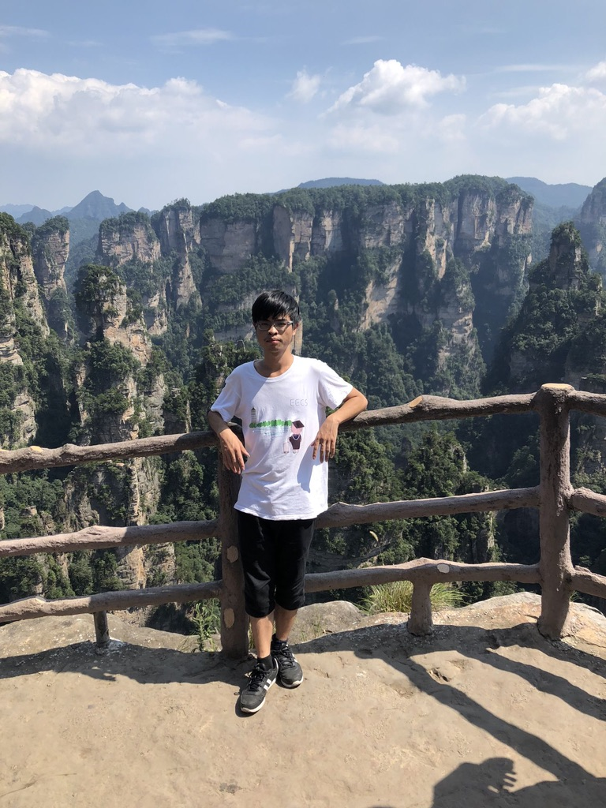

Xiaowei Jiang (江孝炜)
I am currently a postdoc at SCMS, mentored by Prof. Chen Jiang.
I received my Ph.D. from YMSC in 2026 under the supervision of Prof. Caucher Birkar.
This is my CV.
Office: Shanghai Center for Mathematical Sciences, Room 415-417, Fudan University.
Emails:
- xw_jiang[at]fudan[dot]edu[dot]cn
- xiaoweijiang[at]pku[dot]edu[dot]cn
- jxw20[at]tsinghua[dot]org[dot]cn
Research interest: Birational Geometry
- Minimal Model Program and Abundance
- Boundedness and Moduli of Algebraic Varieties

Papers
Publications
- Failure of Boundedness for Generalised Log Canonical Surfaces (joint with Christopher Hacon ), to appear in Special Issue: AGEA2025, Taiwanese J. Math., arXiv:2504.06482 [arXiv] [PDF]
- Boundedness of polarized log Calabi-Yau fibrations with bounded bases (joint with Junpeng Jiao and Minzhe Zhu ), to appear in J. Eur. Math. Soc., arXiv:2504.05243 [arXiv]
Preprints (Click [PDF] for the latest version)
Other writings
- Boundedness of Good Minimal Models. Ph.D. Thesis, Tsinghua University. [PDF] [slide]
- Appendix to Special MMP for log canonical generalised pairs (joint with Vladimir Lazić and Nikolaos Tsakanikas ), arXiv:2108.00993 [arXiv]
Talks
Invited Talks
- Boundedness of polarized log Calabi-Yau fibrations with bounded bases, Xi’an Jiaotong university, Seminar Talk, Sep 14, 2026.
- Quasi-projective moduli for polarized manifolds, East China Normal University, Algebraic Geometry Workshop, Jul 26, 2026.
- Boundedness of klt good minimal models, Westlake University, Seminar Talk, Jan 19, 2026.
- Boundedness of klt good minimal models, Fudan University, Seminar Talk, Jan 8, 2026.
- Boundedness of klt good minimal models, Shandong University, Seminar Talk, Dec 11, 2025.
- Proof of b-semiampleness conjecture, Xiamen University, b-semiampleness workshop, Dec 5, 2025.
- Boundedness of polarized log Calabi-Yau fibrations with bounded bases, Centro di Ricerca Matematica Ennio De Giorgi, Pisa, Workshop on Boundedness and Moduli Problems in Birational Geometry and Foliation Theory (Oct 27 - Oct 31), Oct 31, 2025.
- Boundedness of polarized log Calabi-Yau fibrations with bounded bases, Tsinghua University, Beijing Algebraic Geometry Day, Aug 23, 2025.
- Boundedness and moduli of klt good minimal models, Chongqing University, Seminar Talk, Jun 6, 2025.
- Boundedness of polarized log Calabi-Yau fibrations with bounded bases, Tsinghua University, Algebraic Geometry Workshop, May 30, 2025.
- Boundedness of klt good minimal models (I)&(II), Xiamen University, Seminar Talk, May 13&14, 2025.
- Boundedness of Fano Type Fibrations, East China Normal University, Algebraic Geometry Seminar , Nov 14, 2024.
- Boundedness and moduli of traditional stable minimal models, Peking University, AG Preprint Seminar, Jan 4, 2024. [slide]
Graduate Student Seminar Talks
- Introduction, Reading Seminar on Moduli of Boundary Polarized Calabi-Yau Pairs , Peking University, October 2023.
- Rationality in families, One Theorem Seminar, Tsinghua University, February 2023.
- Relative Fujita conjecture, Reading Seminar on Local Positivity, Tsinghua University, December 2022.
- The Miyaoka-Yau inequality and uniformisation of higher-dimensional algebraic varieties, Tsinghua Preprint Seminar , Tsinghua University, September 2022.
- Characterization of Abelian varieties, Generic Vanishing Learning Seminar , Tsinghua University, March 2022.
Seminars
- Birational Geometry Seminar (organized with Jingjun Han, Chen Jiang, Qingyuan Xue), Fall 2026, Fudan University.
- Learning seminar on the b-semiampleness conjecture (organized with Junpeng Jiao), Fall 2025, Tsinghua University.
- Birational Geometry Students' Seminar (organized with Junpeng Jiao), Fall 2023 ~ Spring 2024, Tsinghua University.
- Tsinghua Birational Geometry Learning Seminar (organized with Bingyi Chen), Fall 2021 ~ Spring 2023, Tsinghua University.
Teaching
- Algebraic geometry, Spring 2022, Tisnghua University, TA.
Visiting
- Sep 11 - Sep 15, 2026, visiting Prof. Fei Si, Xi’an Jiaotong university, Xi’an, China.
- Jul 24 - Jul 28, 2026, visiting Prof. Lu Qi, East China Normal University, Shanghai, China.
- Jul 5 - Jul 11, 2026, visiting Prof. Caucher Birkar, Tsinghua University, Beijing, China.
- June 21 - Jun 25, 2026, visiting Prof. Chen Jiang, Fudan University, Shanghai, China.
- Jan 18 - Jan 22, 2026, visiting Prof. Jiyuan Han, Westlake University, Hangzhou, China.
- Jan 7 - Jan 9, 2026, visiting Prof. Jingjun Han, Fudan University, Shanghai, China.
- Dec 9 - Dec 11, 2025, visiting Prof. Feng Hao, Shandong University, Jinan, China.
- Nov 30 - Dec 5, 2025, visiting Prof. Chuyu Zhou, Xiamen University, Xiamen, China.
- Jun 5 - Jun 8, 2025, visiting Prof. Yu Zou, Chongqing University, Chongqing, China.
- May 12 - May 16, 2025, visiting Prof. Chuyu Zhou, Xiamen University, Xiamen, China.
- Jan 21 - May 1, 2025, visiting Prof. Christopher Hacon, The University of Utah, Salt Lake City, USA.
- Nov 13 - Nov 16, 2024, visiting Prof. Lu Qi, East China Normal University, Shanghai, China.
- Aug 23 - Aug 25, 2024, visiting Prof. Santai Qu, Institute of Geometry and Physics, USTC, Shanghai, China.
Travel
- 2026
- Aug 24 - Aug 29, 2026, Conference on Foliation, Fibration, and Moduli , Westlake University, Hangzhou, China.
- Aug 3- Aug 14, 2026, 2026 SCMS Algebraic Geometry Summer School , Fudan, Shanghai, China.
- Jul 6 - Jul 10, 2026, 5th National Algebraic Geometry Conference , Peking University, Beijing, China.
- Jul 1 - Jul 5, 2026, Weihai Workshop on Hodge Theory and Singularities , Shandong University, Weihai, China.
- Jan 18 - Jan 21, 2026, Workshop on Analytic Methods in Complex Geometry , Westlake University, Hangzhou, China.
- Jan 4 - Jan 7, 2026, Workshop on K-stability , East China Normal University, Shanghai, China.
- 2025
- Dec 26 - Dec 31, 2025, Workshop on algebraic geometry , TSIMF, Sanya, China.
- Oct 27 - Oct 31, 2025, Workshop on Boundedness and Moduli Problems in Birational Geometry and Foliation Theory , Centro di Ricerca Matematica Ennio De Giorgi, Pisa, Italy.
- Oct 16 - Oct 18, 2025, Algebraic Geometry Workshop , BIMSA, Beijing, China.
- Aug 18 - Aug 22, 2025, Summer School on Birational Geometry of Foliations , Peking University, Beijing, China.
- Jul 14 - Jul 25, 2025, 2025 Summer Research Institute in Algebraic Geometry , Colorado State University, Fort Collins, CO, USA.
- Jun 30 - Jul 11, 2025, 2025 SCMS Algebraic Geometry Summer School , Fudan, Shanghai, China.
- Jun 23 - Jun 27, 2025, Workshop on Fano Varieties , Peking University, Beijing, China.
- Jun 9 - Jun 13, 2025, Southeastern Algebraic Geometry Symposium VIII , SUSTech, Shenzhen, China.
- May 28 - Jun 1, 2025, Conference on Explicit Birational Geometry , Peking University, Beijing, China.
- 2024
- Dec 22 - Dec 27, 2024, Workshop on algebraic geometry , TSIMF, Sanya, China.
- Oct 21 - Oct 25, 2024, Sino-French Conference on Algebraic Geometry (in Memory of Prof. Gang Xiao) , Academy of Mathematics and Systems Science, Beijing, China.
- Oct 6 - Oct 8, 2024, Birational Algebraic Geometry Workshop, CQUT, Chongqing, China.
- Sep 25 - Sep 29, 2024, Workshop on Birational Geometry , Fudan University, Shanghai, China.
- Aug 26 - Aug 30, 2024, Foliation and Birational Geometry , Fudan University, Shanghai, China.
- Aug 16 - Aug 23, 2024, Workshop on Hodge theory 2024 , University of Science and Technology of China, Hefei, China.
- Jul 18 - Jul 24, 2024, International Summer School of Algebraic Geometry , Fudan University, Shanghai, China.
- Jul 14 - Jul 19, 2024, The 4th National Algebraic Geometry Conference , Shandong University, Weihai, China.
- May 20 - May 24, 2024, International Workshop on Higher Teichmüller Theory , Nankai University, Tianjin, China.
- Apr 22 - Apr 26, 2024, Complex Algebraic Geometry and Related Topics , Academy of Mathematics and Systems Science, Beijing, China.
- Apr 5 - Apr 9, 2024, Spring Workshop on Algebraic Geometry, Wuhan University, Wuhan, China.
- 2023
- Dec 22 - Dec 26, 2023, Workshop on algebraic geometry , TSIMF, Sanya, China.
- Dec 9 - Dec 11, 2023, Young Perspectives on Algebraic Geometry , Academy of Mathematics and Systems Science, Beijing, China.
- Jul 12 - Jul 14, 2023, ICBS Satellite Conference on Algebraic and Arithmetic Geometry, BIMSA, Beijing, China.
- Jun 28 - Jun 29, 2023, Birational Geometry Workshop , Tsinghua University, Beijing, China.
- Jun 2 - Jun 4, 2023, Birational Algebraic Geometry Workshop , CQUT, Chongqing, China.
- May 8 - May 12, 2023, Conference on Algebraic Geometry and Related Topics , Nanjing University, Nanjing, China.
- Apr 21 - Apr 23, 2023, 2023 Workshop on Explicit Birational Geometry , Fudan University, Shanghai, China.
- Apr 7 - Apr 9, 2023, Southeastern Algebraic Geometry Symposium (IV) , SUSTech, Shenzhen, China.
- Jul 12 - Jul 14, 2023, BIMSA-YMSC p-adic Workshop: the Emerton–Gee stack and beyond , BIMSA, Beijing, China.
- 2022 and before
- Oct 21 - Oct 22, 2022, Birational Geometry Workshop , BIMSA, Beijing, China.
- Jul 4 - Jul 17, 2021, Summer School on Birational Geometry of Algebraic Varieties , Xiamen University, Xiamen, China.
- Nov 5 - Nov 8, 2020, Workshop on Geometric Structures and Topological Invariants , Sichuan University, Chengdu, China.